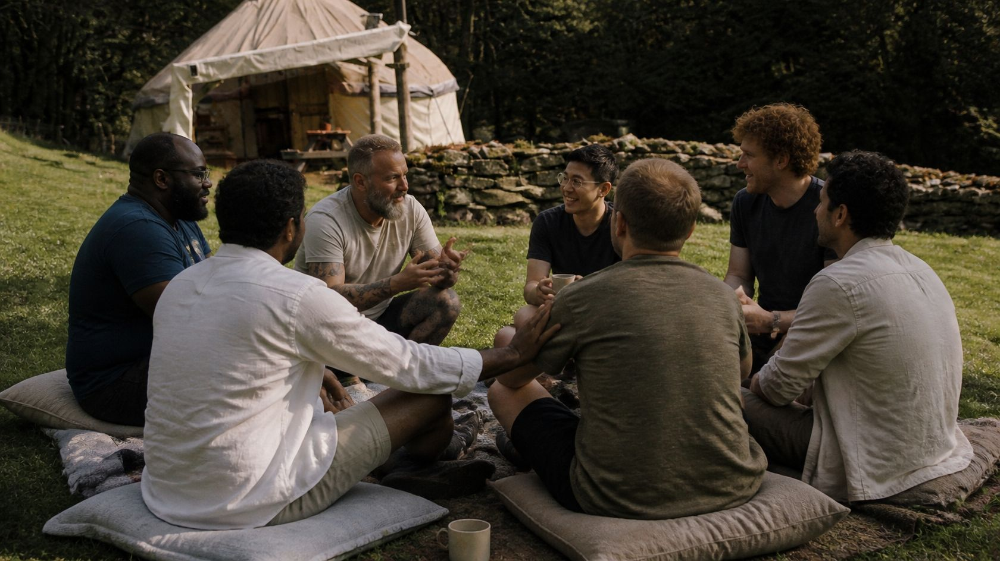

You tend to show up as
“You'd do anything for anyone.”
It's what people say about you, and it's true. But while it might look that way from the outside, there's often more going on underneath.
This is a starting point, not a label. Most of us recognise ourselves in more than one of these patterns, because we learned different ways to stay safe at different times.
You're the one people call. You notice when someone's quiet. You know who needs a lift, who's had a hard week, who would rather not sit next to whom at dinner. You say yes, and you mean it, mostly.
Your days aren't always yours. They fill up with other people's plans.
And when someone finally turns to you and asks what you'd like, something goes blank. “I don't mind. Whatever you prefer.” Or simply, “I'm fine.”
For years I thought being a good person meant making everyone else happy. I think I learned it very young, long before I had words for what it was doing.
Maybe somewhere along the way, you noticed that people responded well when you were helpful and easy to be around. Perhaps asking for what you needed didn't always get the same response.
So you looked after everyone else. Keeping people comfortable may have become a way of feeling safe, accepted and loved. Your kindness is real. I don't think it was ever the problem.
People-pleasing can look a lot like kindness. That's what makes it so hard to see.
It can cost you your evenings, your energy, and in the end your sense of what you want. You carry the frustration on your own, because you don't want to be a burden. Sometimes it builds until it comes out sideways, sharper than you meant, and then you feel bad about that too.
I'm not sure I even knew what I wanted for a long time. I'd never stopped long enough to ask.
Caring less isn't the answer. You notice people in a way a lot of us don't.
But something changes when you start including yourself in the list of people you look after. You might find you have more room, and more time, and that you show up better for the people you love when you've looked after yourself too. You might find you can say no and still be loved.
What would it be like to be wanted for who you are, not for what you carry?
Gay Men Connect · The Circle
The Gay Men Connect Circle is free and online, every Monday at 6pm UK time, for up to 15 men. For once, nobody needs looking after.
The first circle is on Monday 4 January 2027, a New Year's intention setting circle.
I offer free 45-minute calls, A Private Discovery Conversation. You don't need to have anything figured out. It's a chance to talk about where you are and see whether working together feels right.
The first calls are on Monday 4 January 2027, and you can book one now.

A picture of the weekend, made for this page. Not a photograph of a past retreat.
The Gay Men Connect Retreat is a weekend for gay, bi, trans and queer men, from 10 to 12 September 2027, at Hill Farm in Tintern, near Chepstow.
It's a chance to spend time with other men without feeling you need to entertain anyone. No alcohol, drugs or sex. Just time together, honest conversations and evenings around the fire.
I wrote about the job I gave myself as a boy, and how long I kept doing it after I came out.
You might see yourself in more than one of these. Most of us do.
You always have it handled.
You're so independent.
You're so much fun.
Swipe to see all of them →